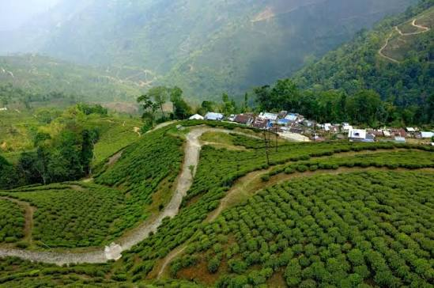

Darjeeling, India

Дарджилинг — чёрный чай, который выращивают в районе Дарджилинг, штат Западная Бенгалия, на севере Индии, в предгорьях Гималаев. Плантации расположены на склонах на высоте от нескольких сотен метров до двух тысяч метров над уровнем моря.
Чайное дело в регионе началось в середине XIX века, когда британцы начали высаживать здесь китайские чайные кусты. Дарджилинг — один из первых индийских продуктов, получивших защиту по географическому указанию (в 2004 году).